Yuma Koizumi, Heiga Zen, Shigeki Karita, Yifan Ding, Kohei Yatabe, Nobuyuki Morioka, Yu Zhang Wei Han Ankur Bapna Michiel Bacchiani
Abstract:
Speech restoration (SR) is a task of converting degraded speech signals into high-quality ones. In this study, we propose a robust SR model called Miipher, and apply Miipher to a new SR application: increasing the amount of high-quality training data for speech generation by converting speech samples collected from the Web to studio-quality. To make our SR model robust against various degradation, we use (i) a speech representation extracted from w2v-BERT for the input feature, and (ii) a text representation extracted from transcripts via PnG-BERT as a linguistic conditioning feature. Experiments show that Miipher (i) is robust against various audio degradation and (ii) enable us to train a high-quality text-to-speech (TTS) model from restored speech samples collected from the Web.
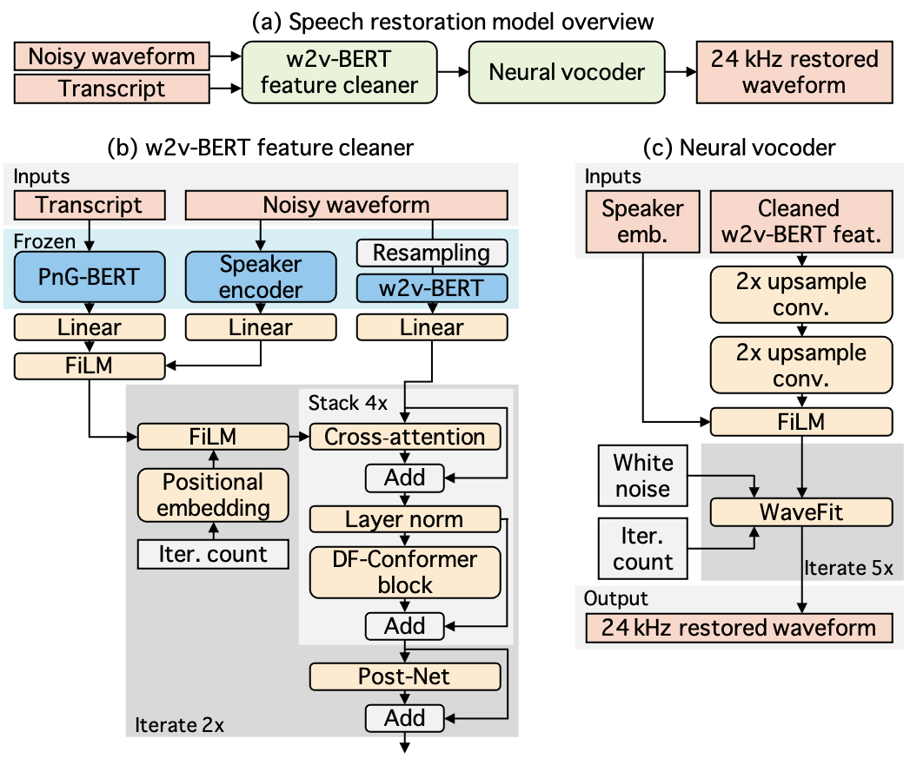
Comparison on a synthesized dataset:
This section shows samples of the objective experiments. We evaluated the effectiveness of w2v-BERT [1] and PnG-BERT [2] while comparing the sound quality between the studio-recorded original speech and restored samples from artificially contaminated samples. Each table includes the studio-recorded clean target, simulated noisy signal, and outputs of four patterns model using either w2v-BERT features or log-mel spectrogram as the input feature. The four pattern include "full model (i.e. uses both PnG-BERT features and speaker embedding [3])", "w/o text conditioning (i.e. without PnG-BERT)", "w/o speaker embedding", and "w/o text conditioning & speaker embedding".
| Clean target |
Noisy input |
|||
|---|---|---|---|---|
| 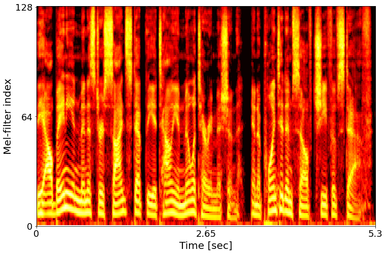 | 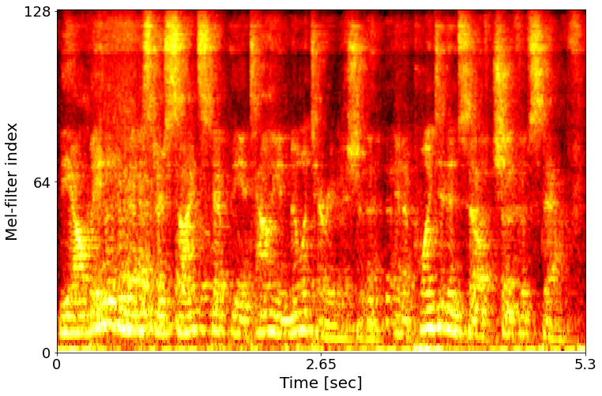 | |||
| |
||||
| Feature |
Full model |
w/o text conditioning |
w/o speaker embedding |
w/o text conditioning & speaker embedding |
| w2v-BERT | 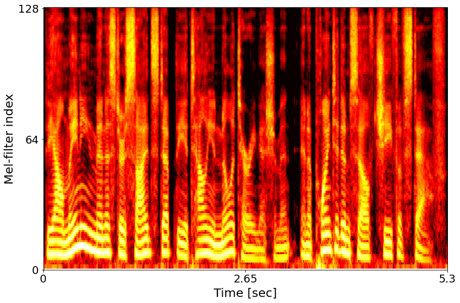 | 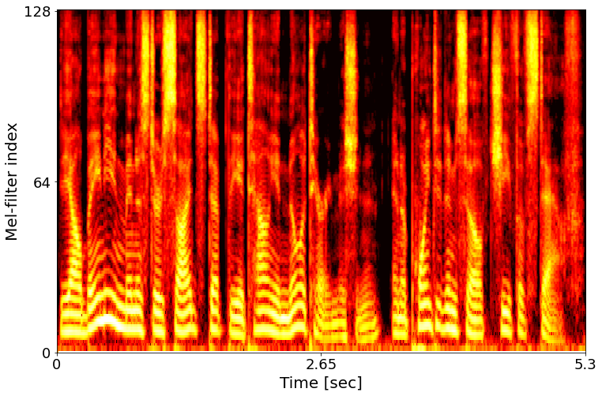 | 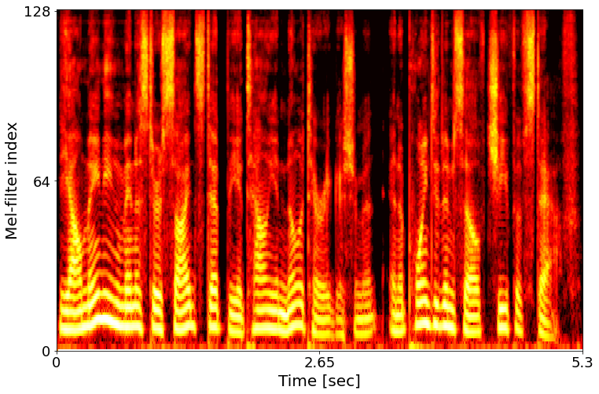 | |
| log-mel | 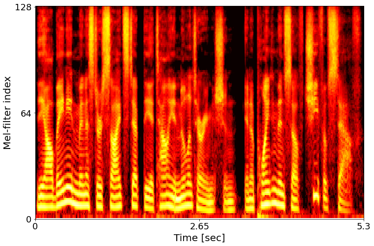 | 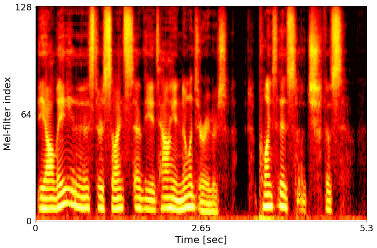 | 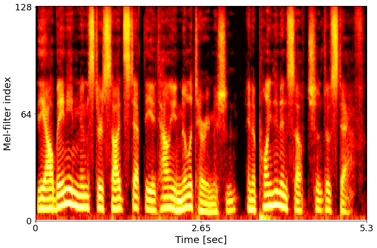 | 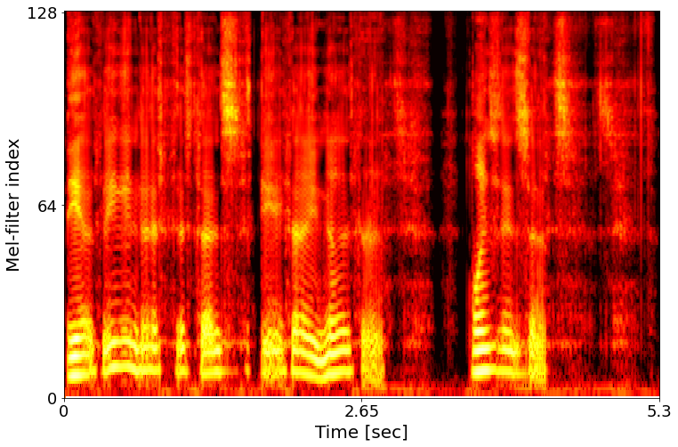 |
| Clean target |
Noisy input |
|||
|---|---|---|---|---|
| 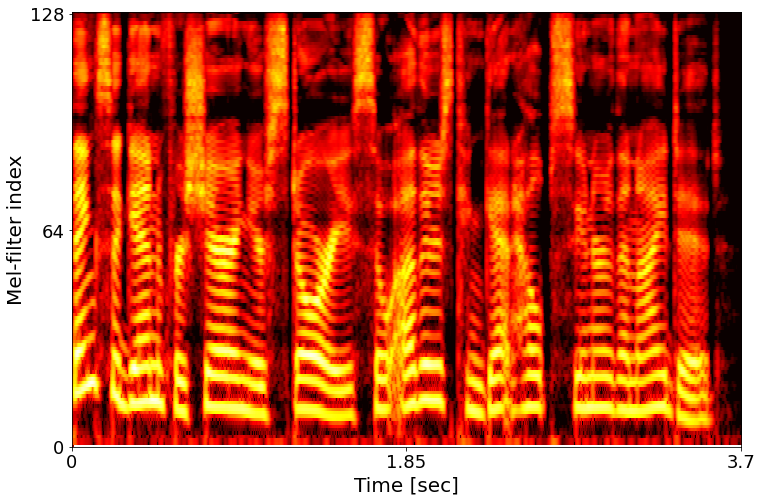 | 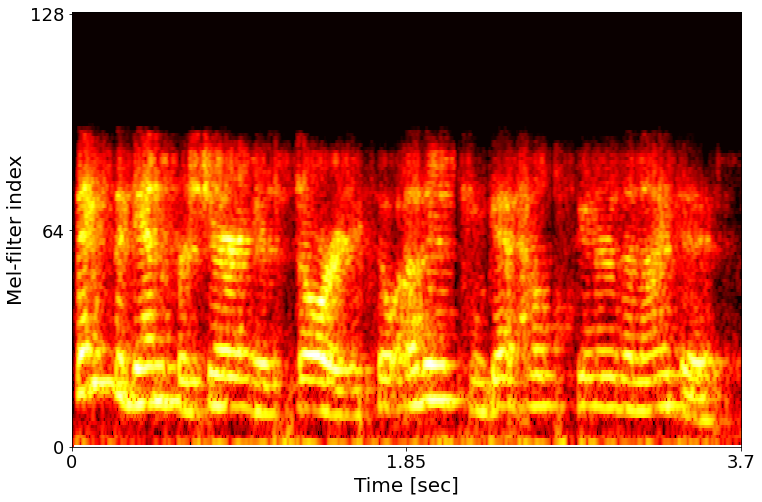 | |||
| |
||||
| Feature |
Full model |
w/o text conditioning |
w/o speaker embedding |
w/o text conditioning & speaker embedding |
| w2v-BERT |  |
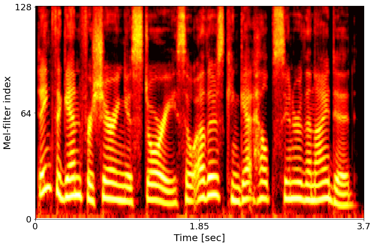 | 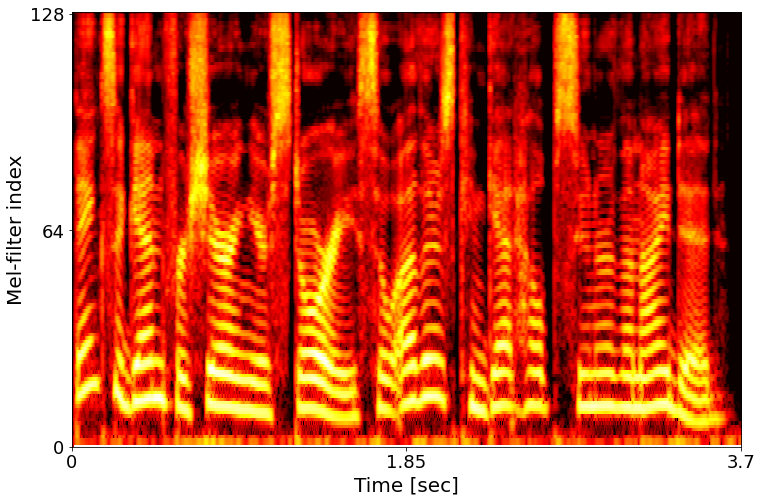 | 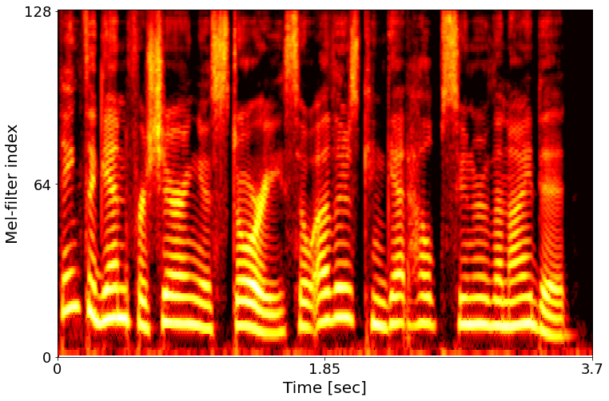 |
| log-mel | 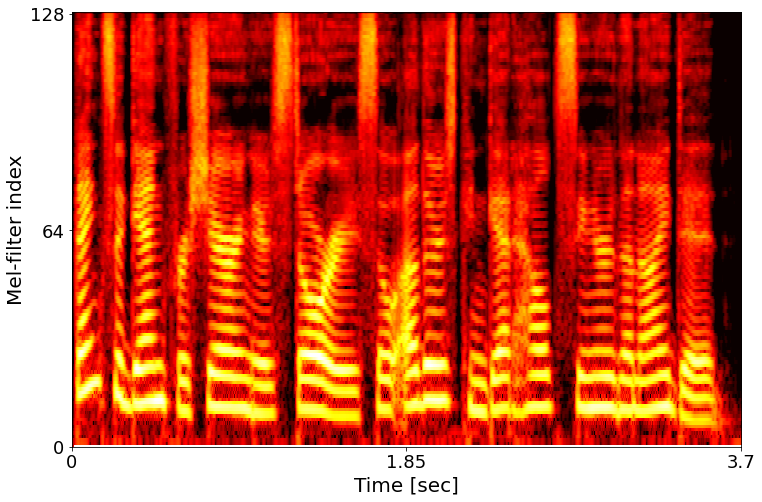 | 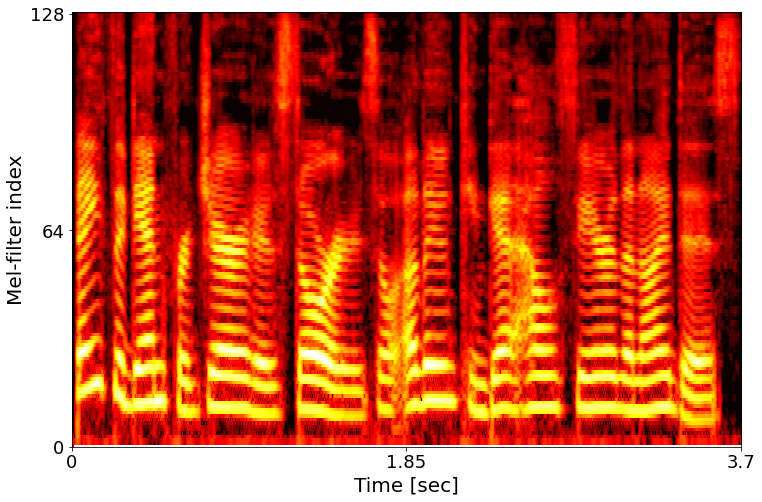 | 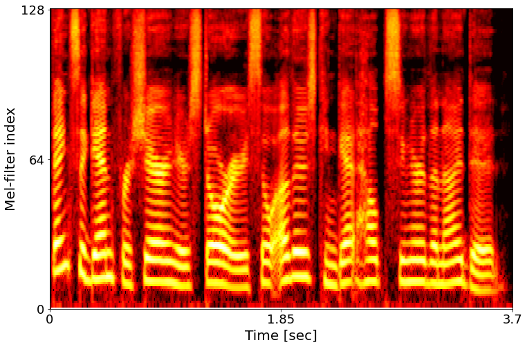 | 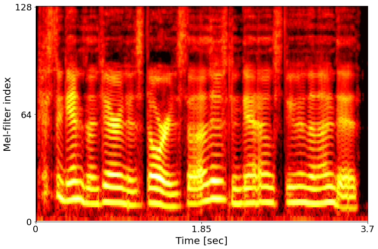 |
Importance of text-conditioning (force-alignment results):
To demonstrate the effects of text-conditioning in more detail, we performed force-alignment between the restored speech and the ground-truth text. The following examples show that if the input is severely distorted, even using w2v-BERT features, some words cannot be restored, resulting in less accurate force-alignment. Alignment of phonemes and waveforms is especially important for training the acoustic model in a TTS system. Therefore, text-conditioning is very important in Miipher purpose (and perhaps also in robust speech restoration).
Clean target
|
|
|---|---|
|
Noisy input 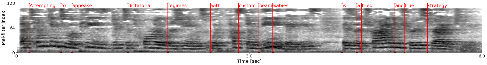 |
|
|
Miipher output: w2v-BERT with text-conditioning 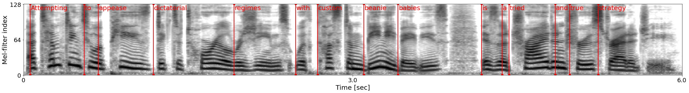 |
|
|
Miipher output: w2v-BERT without text-conditioning 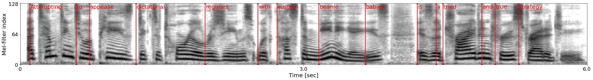 |
|
Clean target 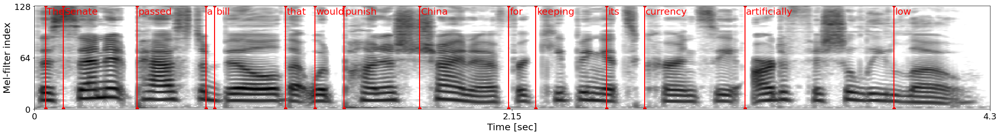 |
|
|---|---|
|
Noisy input 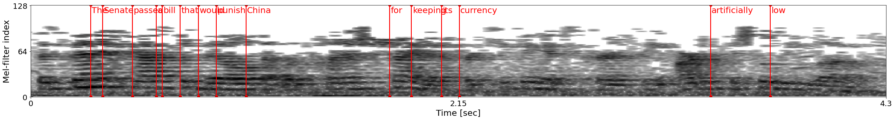 |
|
|
Miipher output: w2v-BERT with text-conditioning 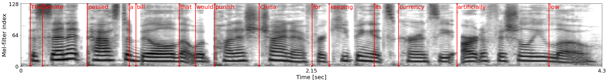 |
|
|
Miipher output: w2v-BERT without text-conditioning 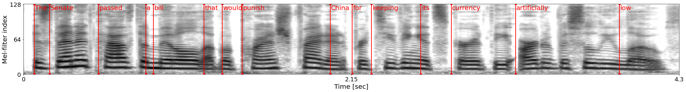 |
Common Voice restoration & TTS outputs:
We applied our SR model to the Common Voice dataset [4] which is an automatic speech recognition (ASR) dataset collected by a crowdsourcing project. We show that our SR model can restore speech samples in-the-wild that contain various types of speech degradation, and enable us to train a TTS model from the restored speech samples.
The first block shows the ground-truth samples of the original Common Voice and restored Common Voice.
The second block shows the generated speech of a TTS model trained on the restored Common Voice.
The TTS model consists of a duration unsupervised non-attentive Tacotron (NAT) [5] acoustic model and a WaveRNN neural vocoder [6]. Note that we did not use speaker ID because Common Voice is prohibited from identifying the speaker. That is, it was trained as a single-speaker TTS model.
Ground-truth example restoration:
| Original | Restored |
| Original | Restored |
| Original | Restored |
| Original | Restored |
TTS using LJspeech sentences:
LibriVox restoration & TTS outputs:
As well as the above Common Voice examples, we applied our SR model to speech samples from LibriVox [7]. The restored training dataset contains 13,270 hours of speech samples spoken by 4,000 speakers.
We show that our SR model enables us to train a multi-speaker TTS model from the restored speech samples collected from the web.
The first block shows the ground-truth samples of the original LibriVox and restored LibriVox. The second block shows the generated speech of the multi-speaker TTS model. The TTS model and all hyper-parameters were the same as the above Common Voice TTS model except for the number of class for the speaker ID embedding layer.
Ground-truth example restoration:
| Original | Restored |
| Original | Restored |
| Original | Restored |
| Original | Restored |
TTS using LJspeech sentences:
| Speaker ID : 10801 | Speaker ID : 4788 | Speaker ID : 8138 | Speaker ID : 5968 |
| Speaker ID : 10801 | Speaker ID : 4788 | Speaker ID : 8138 | Speaker ID : 5968 |
| Speaker ID : 10801 | Speaker ID : 4788 | Speaker ID : 8138 | Speaker ID : 5968 |
| Speaker ID : 10801 | Speaker ID : 4788 | Speaker ID : 8138 | Speaker ID : 5968 |
LJspeech restoration & TTS outputs:
We applied our SR model to the LJspeech corpus [8] which has been used as a standard TTS dataset. We show that by only changing the training dataset to the restored LJspeech (called LJspeech-R), the quality of TTS outputs improves without changing the model or hyper-parameters.
The first two column shows the ground-truth samples of the original LJspeech and LJspeech-R (our SR model outputs).
And the later two columns show the generated speech of TTS models trained on either LJspeech or LJspeech-R.
The TTS model and all hyper-parameters were the same as the above Common Voice TTS model.
| LJspeech ground-truth | LJspeech-R ground-truth | TTS trained on LJSpeech | TTS trained on LJSpeech-R |
| LJspeech ground-truth | LJspeech-R ground-truth | TTS trained on LJSpeech | TTS trained on LJSpeech-R |
| LJspeech ground-truth | LJspeech-R ground-truth | TTS trained on LJSpeech | TTS trained on LJSpeech-R |
| LJspeech ground-truth | LJspeech-R ground-truth | TTS trained on LJSpeech | TTS trained on LJSpeech-R |
Acknowledgement:
We appreciate valuable feedback and support from Daniel S. Park, Hakan Erdogan, Haruko Ishikawa, Hynek Hermansky Johan Schalkwyk, John R. Hershey, Keisuke Kinoshita, Llion Jones, Neil Zeghidour, Quan Wang, Richard William Sproat, Ron Weiss, Shiori Yamashita, Yotaro Kubo, and Victor Ungureanu.
References:
[1] Yu-An Chung, Yu Zhang, Wei Han, Chung-Cheng Chiu, James Qin, Ruoming Pang, Yonghui Wu,
"w2v-BERT: Combining Contrastive Learning and Masked Language Modeling for Self-Supervised Speech Pre-Training,"
In Proc. ASRU, 2021.
[paper]
[2] Ye Jia, Heiga Zen, Jonathan Shen, Yu Zhang, Yonghui Wu,
"PnG BERT: Augmented BERT on Phonemes and Graphemes for Neural TTS,"
In Proc. Interspeech, 2021.
[paper]
[3] Quan Wang, Yiling Huang, Han Lu, Guanlong Zhao, Ignacio Lopez Moreno,
"Highly Efficient Real-Time Streaming and Fully On-Device Speaker Diarization with Multi-Stage Clustering,"
arXiv:2210.13690, 2022.
[paper]
[4] Rosana Ardila, Megan Branson, Kelly Davis, Michael Henretty, Michael Kohler, Josh Meyer, Reuben Morais, Lindsay Saunders, Francis M. Tyers, Gregor Weber, "Common Voice: A Massively-Multilingual Speech Corpus," in Proc. LREC, 2020.
[paper]
[5] Jonathan Shen, Ye Jia, Mike Chrzanowski, Yu Zhang, Isaac Elias, Heiga Zen, Yonghui Wu, "Non-Attentive Tacotron: Robust and Controllable Neural TTS Synthesis Including Unsupervised Duration Modeling," arXiv:2010.04301, 2020.
[paper]
[6] Nal Kalchbrenner, Erich Elsen, Karen Simonyan, Seb Noury, Norman Casagrande, Edward Lockhart, Florian Stimberg, Aaron van den Oord, Sander Dieleman, Koray Kavukcuoglu
"Efficient Neural Audio Synthesis," in Proc. ICML, 2018
[paper]
[7] LibriVox web page
[8] Keith Ito, Linda Johnson "The LJ Speech Dataset," 2017.
[web page]